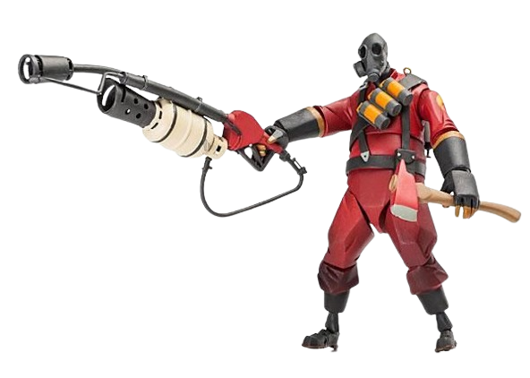

Pyro de Team Fortress 2

Lanzallamas
sdgakjfdngoijoidgoaidiouafgaiuhiguivdrfayusfosudfpuiSDGFIOPhsdfuigOISDFHGIO vgfoiuGSUIFHsougfoFiopusgfyusDFIOgsdfuosodfuiboUSVF0UsdfugSDBVU9I
El Pyro es uno de los personajes icónicos de Team Fortress 2. Aquí hay una imagen de él